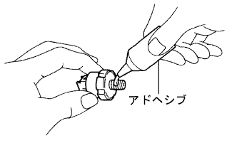

Engine Oil Pressure Switch Assembly (2AZ-FE) Installation |
| 1. Install Engine Oil Pressure Switch Assembly |
 |
Apply adhesive 1324 to the threads.
 |
Using a deep socket wrench 24mm, install the oil pressure switch.
Connect the oil pressure switch connector.